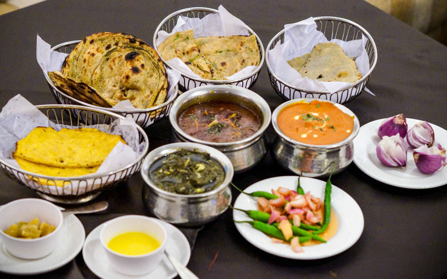

DRESS

Men wear shalwar kameez with turbans or waistcoats. Women wear colorful shalwar kameez, dupatta, and phulkari embroidery.Punjabi dresses are vibrant, colorful, and reflect the region's rich cultural heritage.
FOOD

Famous dishes include siri paye, butter chicken, saag, makai ki roti, and lassi.Other notable dishes include dal makhani, chole bhature, and paneer tikka. Punjab is also famous for its rich dairy products, including lassi (a yogurt-based drink) and paneer (cottage cheese). The cuisine is characterized by robust flavors, generous use of ghee (clarified butter), and an abundance of fresh herbs and spices. The food of Punjab reflects the region’s agricultural abundance and its people’s love for rich, comforting meals.
CULTURE

Punjab is known for its lively Bhangra dance, energetic music, Sufi poetry (like Bulleh Shah), and rich agricultural traditions.The culture is deeply connected to music, dance, and festivals, with Bhangra and Gidda being the most popular traditional dances, performed with energy and enthusiasm at weddings and harvest festivals like Lohri and Baisakhi. The region's folk music, including dhol beats and tumbi tunes, is an essential part of daily life, celebrating everything from love to labor. The Punjabi language, written in the Gurmukhi script, is a key cultural marker.